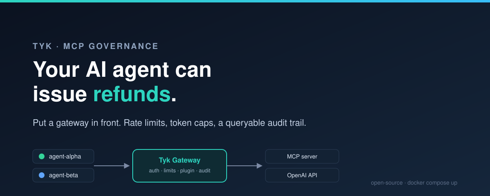
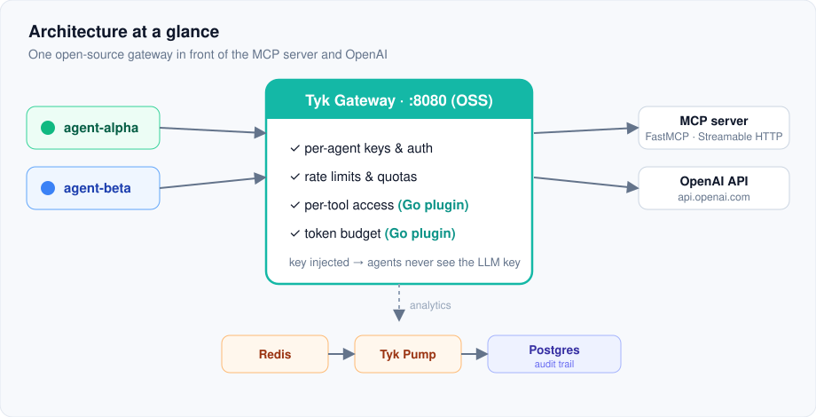
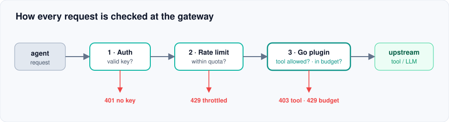

Per-agent rate limits, a Go token-guard plugin, and an audit trail you can query. All on the free, open-source Tyk gateway.

Teams are wiring AI agents up to internal tools through MCP, and a lot of them are doing it with no controls at all. Any agent can call any tool, as often as it likes, and nobody keeps a record. That's fine right up until an agent that was supposed to read orders starts refunding them.
James Hirst made this case on this blog, in "Why AI agents using MCP need API gateways". The argument is hard to disagree with: agents recreate the exact problems that built the API gateway market in the first place. Auth is a mess. There's no visibility. Rate limiting is an afterthought. There's no audit trail. The access rules live in someone's head. He's right about all of it. He also doesn't show you a single line of code.
This does. We're going to take a real MCP server, put it behind the open-source Tyk gateway, and hand two agents their own keys. Then we watch the gateway stop one of them from issuing refunds, throttle it when it floods us, cut it off when it burns through its token budget, and log every last call to a database you can query. No Dashboard, no license, no trial. Clone the repo, run one command, watch it work.
Strip out the protocol talk and it's a short list. Five things:
Everything below is just wiring up those five. Here's the shape of it.

Two things sit behind the gateway. One is an MCP server with a couple of internal tools. The other is the OpenAI API. The gateway handles identity, rate, and audit for both on its own. Two jobs it won't do out of the box are per-tool access and a per-agent token budget, so for those we write one small Go plugin.
A quick note on Tyk's native MCP gateway. Tyk 5.13 added a built-in MCP gateway that reads the JSON-RPC and applies per-tool rules for you. It's open source, per-tool rate limits and filtered discovery included. The catch is a bug, not a paywall: on a gateway with no Dashboard, MCP proxy definitions don't load. You create one, the gateway says
added, then quietly skips it, because it's an OAS-format definition and the open-source file loader has an open issue that drops OAS defs. The Dashboard loads them through its database and sidesteps the bug, so the feature works there. Until the loader is fixed, the free no-Dashboard route is a plugin, which is what this guide uses. More on the native path at the end.
The MCP server is a small FastMCP app with two tools. One reads data, one is the dangerous one. An agent that can read your orders is a convenience. An agent that can refund them is a liability with a personality. That split is the whole point of per-tool access.
from fastmcp import FastMCP
mcp = FastMCP("internal-tools")
@mcp.tool
def lookup_order(order_id: str) -> dict:
"""Look up an internal order by its ID. Read-only."""
...
@mcp.tool
def issue_refund(order_id: str, amount: float) -> dict:
"""Issue a refund against an order. Sensitive / state-changing."""
...
if __name__ == "__main__":
# transport="http" is the current name for Streamable HTTP.
mcp.run(transport="http", host="0.0.0.0", port=8000)
Streamable HTTP only. Tyk is a network gateway, so it can't proxy a stdio MCP server. If yours speaks stdio, put a bridge in front of it. FastMCP serves Streamable HTTP already, so we're fine.
The docker-compose.yml brings up the gateway, Redis (Tyk needs it, even for one node), the MCP server, Tyk Pump, and Postgres. The gateway runs in open-source mode and reads its config from files. Putting the MCP server behind it is just pointing a Tyk API at it:
// tyk/apps/internal-tools.json (excerpt)
"proxy": {
"listen_path": "/internal-tools/",
"target_url": "http://mcp-server:8000",
"strip_listen_path": true
},
"use_keyless": false,
"use_standard_auth": true,
"auth": { "auth_header_name": "apikey" }
Now the gateway serves the MCP server at http://localhost:8080/internal-tools/mcp, and it asks for a key, because we turned keyless access off. One warning, learned the hard way: do not put mcp in the api_id. The gateway routes anything with mcp in the name to its built-in MCP path, which only accepts OAS-format definitions, so it quietly drops a plain (classic) API def. It doesn't warn you. It just acts like your API doesn't exist. I lost an afternoon to that so you don't have to.
Every request runs the same set of checks, and any one of them can stop it before it reaches a tool or the model.

With keyless off, every call needs a key, so we hand one to each agent. Now every request has a name on it. Each key carries its own access rights, its own rate limits, and a little metadata the plugin reads later.
curl -H "x-tyk-authorization: $SECRET" -X POST http://localhost:8080/tyk/keys -d '{
"org_id": "default",
"alias": "agent-alpha",
"access_rights": {
"internal-tools": { "api_id": "internal-tools", "versions": ["Default"],
"limit": { "rate": 20, "per": 60 } },
"openai-llm": { "api_id": "openai-llm", "versions": ["Default"],
"limit": { "rate": 1000, "per": 60 } }
},
"meta_data": { "token_budget": 150, "allowed_tools": "lookup_order" }
}'
agent-alpha is the junior account. Tight rate limit, and only lookup_order on its list. agent-beta gets room to move and both tools. Throw a burst at the gateway and the two stay out of each other's way:
agent-alpha 30 rapid calls -> [400 400 400 400 400 429 429 429 ...]
5 reach the server, then 25 are rejected with 429 (rate limit tripped)
agent-beta call during alpha's burst -> reaches the server, unaffected
(Those 400s are the MCP server, not the gateway: this raw burst skips the MCP handshake, so the server turns it away. What matters is what the gateway does: five through, then a wall of 429s.) One agent hammers a tool and trips its own 429s. The other, calling at the same moment, doesn't feel a thing. That's the isolation, and the gateway hands it to you for free.
Rate limits count requests. They can't tell a call for issue_refund from a call for lookup_order. The open-source gateway treats MCP as plain HTTP, so we teach it to read the difference. A small hook reads the JSON-RPC body and checks the tool name against the agent's list.
func McpAccessControl(rw http.ResponseWriter, r *http.Request) {
body, _ := io.ReadAll(r.Body)
r.Body = io.NopCloser(bytes.NewReader(body)) // restore for the upstream
var msg struct {
Method string `json:"method"`
Params struct{ Name string `json:"name"` } `json:"params"`
}
json.Unmarshal(body, &msg)
if msg.Method != "tools/call" { return }
allow, restricted := allowedTools(r) // from key meta_data.allowed_tools
if restricted && !allow[msg.Params.Name] {
rw.WriteHeader(http.StatusForbidden)
io.WriteString(rw, `{"jsonrpc":"2.0","error":{"code":-32001,"message":"tool not permitted"}}`)
}
}
Run the two agents and alpha's refund gets turned away at the door. Beta's goes through:
agent-alpha lookup_order(A-1001) -> {"status": "shipped", ...}
agent-alpha issue_refund(A-1001) -> BLOCKED by Tyk (403)
agent-beta issue_refund(A-1001) -> {"status": "refund_issued", ...}
What an LLM call actually costs is tokens, not requests. That math is specific to your setup, so the gateway leaves it to you. The same plugin, on a second route that fronts OpenAI, takes care of it. A response hook reads total_tokens off each reply and adds it to that agent's running total.
func MeterTokens(rw http.ResponseWriter, res *http.Response, req *http.Request) {
body, _ := io.ReadAll(res.Body)
res.Body = io.NopCloser(bytes.NewReader(body)) // restore for the client
var parsed struct{ Usage struct{ TotalTokens int64 `json:"total_tokens"` } `json:"usage"` }
json.Unmarshal(body, &parsed)
mu.Lock(); spent[agentID(req)] += parsed.Usage.TotalTokens; mu.Unlock()
}
A second hook runs before the call goes out. If the agent is already over budget, the request stops right there and never reaches OpenAI. That same hook swaps in the real OpenAI key, so the agents only ever talk to Tyk and never hold the key themselves.
func EnforceBudget(rw http.ResponseWriter, r *http.Request) {
id, budget := agentID(r), budgetFor(r)
mu.Lock(); used := spent[id]; mu.Unlock()
if used >= budget {
rw.WriteHeader(http.StatusTooManyRequests)
io.WriteString(rw, `{"error":"token budget exhausted"}`)
return // upstream is never called
}
r.Header.Set("Authorization", "Bearer "+os.Getenv("OPENAI_API_KEY"))
}
Give alpha a 150-token budget and it gets three calls before the gate shuts. Beta, on a big budget, keeps going:
agent-alpha (budget 150): call 1: 200 (+50) call 2: 200 (+50) call 3: 200 (+50) call 4: 429 budget exhausted
agent-beta (budget 100000): 200 200 200 200 200 200 200
Two things to remember. OpenAI leaves usage out of streamed replies unless you ask for it with
stream_options, so the guard sticks to plain, non-streamed calls. And this counter lives in the gateway's memory, which is fine for one node. Run two and they'll each think the agent still has budget, which rather defeats the point. Move the count into Redis before you scale out.
Here's the part that catches everyone. A Go plugin has to be built against the same gateway version, the same build flags, and the same CPU type. Get any of those wrong and the gateway won't load it, and it won't be chatty about why. Tyk ships a compiler image pinned to each version so the match is exact:
docker run --rm -v "$(CURDIR)":/plugin-source --platform=linux/amd64 \
-e GO_GET=1 -e GO_TIDY=1 \
tykio/tyk-plugin-compiler:v5.14.0 token_guard.so plugin-v5.14.0
GO_GET=1 pins the Tyk dependency to the right commit for you. Bump the gateway version and you bump the compiler tag with it. (If none of this sounds like a good time, Tyk AI Studio does cost budgets and model governance as a separate Tyk product, no plugin required.)
The gateway writes its logs to Redis. Tyk Pump moves them somewhere permanent. Point it at Postgres:
// pump/pump.conf (excerpt)
"pumps": { "postgres": { "type": "sql", "meta": {
"type": "postgres",
"connection_string": "host=postgres port=5432 user=tyk password=tyk dbname=tyk_analytics sslmode=disable"
} } }
Now every call is a row in tyk_analytics, tagged with the agent's alias. Turn on detailed recording and the request and response bodies ride along too, which means the tool name and the token count are both in there. One query gives you spend per agent:
SELECT alias AS agent,
COUNT(*) AS llm_calls,
SUM((regexp_match(convert_from(decode(rawresponse,'base64'),'UTF8'),
'total_tokens"?\s*:\s*(\d+)'))[1]::int) AS total_tokens
FROM tyk_analytics
WHERE api_name = 'openai-llm' AND responsecode = 200
GROUP BY alias;
agent | llm_calls | total_tokens
------------+-----------+--------------
agent-alpha| 3 | 150
agent-beta | 7 | 350
That's the question compliance actually asks. Which agent did what, when, and what did it cost. "We didn't log it" is not an answer they enjoy. Here it's one query.
A few things worth knowing before you take this further. Build the plugin against the exact gateway version, and rebuild it when you upgrade. Tyk proxies Streamable HTTP, not stdio, so a stdio server needs a bridge. Keep mcp out of your api_id. And move the token counter into Redis before you run more than one gateway.
The real fork is per-tool MCP control. We did it in a plugin because it runs on the free gateway today. Tyk's native MCP gateway does the same job, per-tool limits, filtered tool lists, JSON-RPC rules, with no code, and it's fully open source. The snag is the loader bug from earlier: on a Dashboard-less gateway the MCP definitions don't mount, so to run the native path right now you need the Dashboard (which loads them a different way) or a gateway build with the fix. So the honest trade today: the plugin is free and works on any open-source gateway; the native path is cleaner but currently needs the Dashboard to stand up. When that changes, or when the plugin starts to feel like a second job, the native gateway is the upgrade. Past that, Tyk AI Studio takes over cost and model governance entirely.
But you don't need any of that to start. One open-source gateway in front of your agents turns those five open problems into rules that actually hold. The refund never happens. The flood gets throttled. The budget runs out. And every call is on the record.
docker compose up.